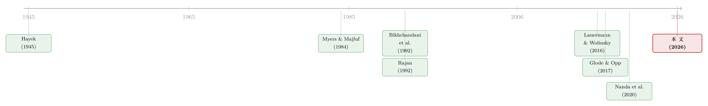

钱越来越好借，中间商却越赚越多——「顺序信贷市场」里那条看不见的逆向选择
本文读的是 Axelson & Makarov (2026, Journal of Financial Economics)：当创业者只能挨家挨户、按顺序去敲投资人的门时，「被拒绝」这件事本身会沿着时间一轮一轮地累积成逆向选择，制造出一种动态逆向选择外部性 (dynamic adverse selection externality)。它的后果出人意料——不是教科书里熟悉的「投资不足」，而是过度投资；而且哪怕竞争的投资人多到无穷，中介依然能稳稳赚取租金。透明度（信用登记）帮的是投资人，集中化市场才压得低租金，但未必更有效率。
1 一个顽固的谜题
先讲一个让人不太舒服的事实。
按理说，过去一个多世纪里金融业发生了翻天覆地的变化：算力暴涨、信息技术让尽职调查的成本几乎归零、放松管制让更多机构涌进来、市场规模和竞争都成倍扩大。所有这些力量都指向同一个方向——金融中介的「过路费」应该越来越便宜才对。
可 Philippon (2015) 把美国一个多世纪的数据摆出来一看，结论却是：每中介一美元资本所收取的单位成本，长期稳定在 1.5%–2% 这个区间，几乎纹丝不动。技术革命没有让它降下来，竞争加剧也没有。这就尴尬了——如果市场真的越来越竞争，租金为什么不降？
无独有偶，风险投资里还有一个被反复记录的现象：顶尖 VC 的业绩持续性强得异常。Nanda et al. (2020) 发现，这种「常胜将军」的格局，很难用这些机构在「增值能力」或「选项目能力」上的边际优势来解释，真正的驱动力是优先交易流 (preferential deal flow)——好项目总是先送到它们手上。一句江湖话叫「success begets success」，成功孕育成功。
把这两件事放在一起，一个自然的问题浮出水面：为什么竞争压不垮中介的租金？为什么一点点（哪怕只是被「感知」到的）优势，就能滚成巨额回报？
本文的回答，藏在一个常被忽略的细节里：创业者找钱，从来不是在一个集中的拍卖场里一次性叫价，而是挨家挨户、按顺序地去敲门。
2 张力所在：顺序，是一切的起点
把场景想清楚。一个创业者带着项目去融资。他不是把项目挂到一个中央交易所让所有投资人同时竞价，而是先去敲第一家的门；第一家做完尽职调查、看了自己的私有信号，决定投或不投；被拒了，他再去敲第二家、第三家……直到有人愿意投，或者敲无可敲、项目作罢。
这就是去中心化的搜寻市场 (decentralized search market)，也是现实中绝大多数面向中小企业的一级市场（风投、银行信贷）的真实样子。
接着，一个关键的信息结构出现了。本文假设：投资人能观察到创业者「在市场上待了多久」——等价地说，他已经被拒了几次（这可以靠信用登记 (credit registry) 这种正式机制，也可以靠口口相传）。但投资人看不到他具体敲过哪几家、上一轮是在什么利率下被拒的。
这一「看得到次数、看不到细节」的设定，正是整篇论文的引线。
这跟我们熟悉的「先卖给中间商反而能治好柠檬市场」是一组有趣的对照——在那篇里，把信息不对称的资产先卖给一个中介，反而恢复了流动性（参见《承诺去交易：为什么「先卖给中间商」反而能治好柠檬市场》）。而这里恰恰相反：顺序本身制造了一条新的、自我强化的摩擦。
3 模型设定
本文是一篇标准的理论论文，设定干净，值得一步步看清楚。
项目。 一个创业者要为项目融 1 单位资本。项目有两种类型：好项目 (\(\theta=G\)) 成功时回报 \(1+X\)，坏项目 (\(\theta=B\)) 回报 \(0\)。先验是 \(P(G)\)，所有投资人共享。
信号。 有 \(\{1,\dots,N\}\) 个潜在投资人，每人都能免费做一次尽职调查，得到一个关于项目类型的私有信号 \(s\in[0,1]\)。条件密度 \(f_G(s)\)、\(f_B(s)\) 满足严格的单调似然比性质 (monotone likelihood ratio property, MLRP)：
$$\forall\, s>s',\quad \frac{f_G(s)}{f_B(s)} > \frac{f_G(s')}{f_B(s')}.$$
直觉很简单：信号越高，是好项目的相对证据越强。论文还假设 \(f_B(1)>0\)，且最乐观信号 \(s=1\) 处的似然比 \(f_G(1)/f_B(1)=\lambda<\infty\) 有界——这保证了「单个信号永远无法彻底排除项目是坏的」，但「看到无穷多个信号就能完美甄别」。
合同。 创业者借 1 单位，成功时还 \(1+r\)，其中 \(r\in[0,X]\)。由于只有一个正现金流实现，这里债权和股权没有区别。
两条让问题非平凡的假设。 项目在「单个投资人的最高信号」下是正 NPV 的：
$$P(G\mid S=1)\,X > P(B\mid S=1),$$
而在「单个投资人的最低信号」下是负 NPV 的：\(P(G\mid S=0)\,X < P(B\mid S=0)\)。也就是说——一个信号好不足以拍板，一个信号坏也不足以枪毙，必须靠信息的累积。
市场机制。 投资人通过定向搜寻 (directed search) 竞争：每个日历期开始时，在看到自己信号之前，所有投资人同时贴出一张利率菜单 \(\{r_t\}_{t=1}^N\)——\(r_t\) 是「对一个在市场上待了 \(t\) 期、此前没接触过的创业者」承诺的利率。创业者根据这些报价选一家去敲门；被敲的投资人看到私有信号 \(S_i\)，若 \(S_i\ge \hat s_{i,t}\)（门槛）就按事先约定的利率放款，否则拒绝。创业者不能回头再找拒过他的人，搜寻一直持续到融到资或彻底放弃。
为了把焦点完全压在「信息分散 + 顺序互动」这一个摩擦上，本文抽掉了所有物理搜寻成本：创业者无限有耐心，找下一家不花钱、不花时间。这一点很重要——它意味着接下来出现的所有低效率，都不是搜寻成本造成的，而纯粹来自信息无法被有效聚合。
4 核心机制：动态逆向选择外部性
现在进入全文的心脏。
我们看均衡里投资人的信念怎么演化。用 \(z_{t-1}\) 记进入第 \(t\) 轮时、市场对该创业者项目「好 : 坏」的后验几率。本文给出的信念表达式是（论文式 (2)）：
$$P(G\mid z_{t-1}) = \frac{z_{t-1}}{1+z_{t-1}},\qquad P(B\mid z_{t-1}) = \frac{1}{1+z_{t-1}}.$$
接着，一个自然的问题是：每被拒一次，这个几率会怎么动？
在均衡里，第 \(t\) 轮的投资人采用门槛 \(\hat s_t\)：信号低于 \(\hat s_t\) 就拒。于是「在第 \(t\) 轮被拒」这个事件，等价于「信号落在 \(\hat s_t\) 以下」。它在好项目里发生的概率是 \(F_G(\hat s_t)\)，在坏项目里是 \(F_B(\hat s_t)\)。按贝叶斯法则，几率就这样一轮一轮地被乘下去：
这条递推就是「动态逆向选择」四个字的全部含义：被拒绝本身是坏消息。好项目更容易过门槛、被拒的概率更小，所以每一次拒绝都让市场把这个项目往「坏」的方向多猜一点，\(z_t\) 单调下滑。等创业者敲到第三家、第四家时，迎接他的投资人面对的，已经是一个被前几轮拒绝「染脏」了的先验。
关键在于信息是怎么传递的。如果一个投资人拒了项目，他手里那个具体的信号值并不会传给下一家——传下去的，只有「被拒过」这个冷冰冰的事实。信息在每次握手成交时停止聚合（成交了就不再找更多信息），在每次拒绝时又只漏出一点点（只剩「被拒」二字）。这是两道一起堵住信息聚合的闸门。
但真正关键的一步，在于这条逆向选择如何反噬创业者的报价选择，并由此把租金留给投资人。
设想：如果后续轮次的投资人能看到创业者早期选了什么利率，那么创业者就会把「我今天的选择会加重未来逆向选择」这件事内部化——他会主动倾向于低利率（也意味着更宽松、更容易被接受的条款），因为这能减少未来被拒的阴影。
然而现实是：后续投资人看不到他早期的具体选择，他们的信念只能基于均衡预期。于是创业者的当期选择不影响后续投资人的信念——既然如此，他就没有动力去压低利率，反而偏好更高的利率 + 更高的接受概率（高利率让投资人更愿意放款）。
于是反转出现了。投资人当然预料到创业者会这么干，于是把对「曾被拒项目」的信念进一步下调；这让拒绝变得更昂贵，又进一步把创业者推向「对投资人有利的条款」——一个自我强化的循环，把租金源源不断地塞给投资人。
这就回答了第 1 节的谜题：即使竞争的投资人数目 \(N\to\infty\)、所有讨价还价的筹码名义上都在创业者手里，投资人作为一个整体依然能赚取可观的租金。竞争压不垮它，因为问题不在竞争不够，而在信息根本传不出去。
5 福利：是过度投资，不是投资不足
讲到这里，本文最反直觉、也最值得一书的结论来了。
公司金融里关于信息不对称的经典叙事，几乎都通向投资不足 (underinvestment)：从 Myers & Majluf (1984) 的逆向选择导致好公司不愿增发，到 Myerson & Satterthwaite (1983) 的双边交易必然交易量过低，都是「该做的好项目没做成」。
本文却说：在顺序信贷市场里，结果常常是过度投资 (overinvestment)。
为什么？把社会规划者会选的门槛拿来当标尺，创业者的门槛被两股力量同时扭：
- 第一股力（标准方向）。 创业者只在乎自己拿到的那份剩余（净掉投资人租金），这让她偏好低利率、高门槛——更挑剔、更难成交，推向投资不足。这是文献里的老熟人。
- 第二股力（本文新增，方向相反）。 因为创业者不内部化「抬高门槛会拉低自己延续价值」这件事（动态逆向选择外部性），她倾向于把门槛抬得过高——结果是过度投资。
本文证明：在很大一类情形下，社会规划者其实偏好「市场尽可能大」，靠把利率压到很低、每被拒一次再缓缓抬高，把全部剩余给创业者，从而把投资人租金逼到零。在这种情形里，竞争性和社会剩余之间没有冲突，第一股「投资不足」的力很弱；而第二股「过度投资」的力依然强劲——于是市场解永远表现为过度投资。
但本文也给出了反面条件：当小样本的最高信号比大样本更有信息量时，规划者反而偏好只用「一小撮精选投资人」并给他们可观租金。原因在于，在顺序市场里，规划者能用到的信息被限制在他纳入市场的那批投资人信号的一阶统计量（最高信号）上。这时投资不足的力不会消失，市场解可能过度、也可能不足。
6 透明度与市场结构：谁受益，谁受损
既然租金来自「顺序 + 看得到次数、看不到细节」，那改变这个结构会怎样？本文比较了三种市场：
(1) 透明的顺序市场（基准）：能看到创业者在市场上待了多久。租金最高。
(2) 不透明的顺序市场：看不到被拒次数。本文证明，这时只存在完全分离均衡——既然利率报价固定，创业者会按利率升序去敲门（先敲最便宜的）；那么如果两家报同样的利率，任一家都有动机稍微再降一点，好抢到「被第一个敲」的位置。\(N\) 越大，这种「抢跑」的冲动逼着投资人不断给出更优条款，极限上市场变得竞争，投资人租金归零。
(3) 集中化市场（拍卖）：投资人在一场拍卖里竞争融资。同样地，\(N\to\infty\) 时租金归零。
可以用一个简单的盈亏平衡条件看清拍卖里租金为何消失。给定信念 \(z_{t-1}\)，一个拿到信号 \(s\) 的投资人，放款的期望利润是 \(P(G\mid s)\cdot r - P(B\mid s)\cdot 1\)（好项目净赚 \(r\)，坏项目亏掉本金 \(1\)）。让边际投资人恰好不赚不赔，就得到他能接受的最低利率：
$$r = \frac{1}{z_{t-1}}\cdot\frac{f_B(\hat s_t)}{f_G(\hat s_t)}.$$
在拍卖里，价格由次高出价者锁定；当 \(N\) 很大、\(\hat s\) 趋近于 1 时，最高与次高信号挤到一起，赢家在成交那一刻的期望利润被压到零。竞争在集中化结构里是有效的——因为所有信息在同一场拍卖里被同时聚合了。
于是本文给出一组很有政策含义的判断：
- 投资人永远欢迎任何提高「在市场上停留时间」透明度的措施，比如信用登记——因为透明的顺序市场租金最高。
- 但投资人不欢迎向集中化市场的转变——那会真正逼降租金。
更妙的反转在效率上：当「小市场」是社会最优时，透明的顺序市场反而可能比不透明市场和集中拍卖都更有效率。原因是，在透明市场里，拒绝累积出的逆向选择可以强到「连最高信号的投资人都无法保本」，于是创业者在敲了几家之后被内生地逐出市场。如果此时市场关停恰恰是社会有效的，那么这种「早早劝退坏项目」的透明顺序市场，反而创造了严格更多的社会剩余。
一句话记住政策含义：透明度（信用登记）抬高的是中介租金，而不是效率；要压租金，得动市场结构本身。 这跟「股票真的是中介『无关』的资产吗」里那种「中介摩擦定价」的视角遥相呼应（参见《股票，真的是中介「无关」的资产吗？》）。
7 一点点优势，为什么能滚成巨额回报
最后回到 VC 里那个「success begets success」。
本文证明：租金被「早期被访问」的投资人不成比例地攫取。越靠前接触创业者，越能在逆向选择尚未恶化时抢到好项目、收到高租金。这就给了投资人一个极强的激励——不惜代价确保自己第一个见到创业者，这正解释了 VC 在「扫市场、抢在对手之前接触创业者」上投入的巨大精力。
而一旦如此，任何让自己成为创业者「首选第一站」的优势——哪怕极其微小——都会被放大成可观的租金。更耐人寻味的是：这优势是真是假，无关紧要。 比如某投资人靠一次成功退出名声大噪，创业者就更愿意先去找它（哪怕那次成功其实是运气）；这又让它继续拿到优先交易流、继续赚高回报，闭环自我实现。本文给「成功孕育成功」提供了一个纯理性的解释，不需要任何真实的能力差异。
8 文献脉络
这条研究的来路，可以串成一根清晰的线。
源头是信息聚合的大问题：Hayek (1945) 与 Grossman (1976) 奠定了「价格/市场如何聚合分散信息」的母题。到信息不对称与公司金融的交汇处，Myers & Majluf (1984) 写下了那条最经典的逻辑——逆向选择导致投资不足，本文要挑战的正是这个默认结论的方向。
接着是「顺序决策 + 信息」这一支：Bikhchandani et al. (1992) 与 Welch (1992) 研究羊群与信息瀑布 (informational cascades)，但他们假设各轮报价外生且相同；本文允许创业者在不同轮次调整报价，因此羊群不再必然发生，是否出现取决于信号分布。

平行的一支是关系型借贷：Rajan (1992) 指出，信息型贷款人拒绝放贷时会给其他借款人制造逆向选择——本文把这套逻辑搬到了「首次借款人」身上。再往近处看，Lauermann & Wolinsky (2016) 在带逆向选择的搜寻框架里聚焦混同均衡 (pooling equilibria)，并得出「搜寻市场在信息聚合上不如集中化市场」的结论；本文的反驳很关键——当买方数目有限但任意大时，存在一个分离均衡，它在信息聚合上可以和集中化市场一样有效；而当「在市场上的时间可观察」时，搜寻市场甚至可能更有效。
至于「顺序 vs 集中」的相对效率，Bulow & Klemperer (2009)、Roberts & Sweeting (2013)、Glode & Opp (2017) 都做过，但他们的低效率来自参与成本或信息获取成本；本文把这些成本统统抽掉，低效率的唯一来源是信息聚合不完美——机制因此根本不同。本文 (2026) 就站在这几条线的交汇点上：第一次系统地刻画了「竞争 + 非对称信息 + 动态逆向选择」三者叠加的后果。
9 评论与延伸（Q&A + 研究方向）
(a) 几个可能的疑问
Q：这里的「动态逆向选择」和静态逆向选择（如 Myers–Majluf）到底差在哪？
差在「时间」与「外部性」。静态版本里，逆向选择是一次性的，结论是投资不足。本文的新东西是：被拒这件事会沿轮次累积，而且创业者今天的报价选择会改变后续轮次的逆向选择，但她不内部化这个影响——这就是「外部性」。正是这条外部性把结果从投资不足扭成了过度投资。
Q：竞争者无穷多，租金却不归零，这不违反直觉吗？
直觉来自「竞争压低价格」，但那要求信息能被聚合。这里的要害是，多一个投资人并不等于多一份被用上的信息——成交即停止聚合，拒绝只漏出一个比特。所以 \(N\to\infty\) 在透明顺序市场里压不垮租金；只有换成集中拍卖或不透明市场，竞争才重新生效。租金的根源是信息结构，不是投资人数目。
Q：为什么信用登记这种「增加透明度、看起来利好借款人」的工具，反而抬高了企业的资金成本？
因为它透明的恰恰是「被拒了几次」。这块信息一旦公开，逆向选择就被坐实并放大，投资人对「老被拒的项目」信念更悲观、要价更高。透明度提升的是投资人的租金，被拒次数越透明，企业的资金成本反而越高。
Q：模型抽掉了搜寻成本和信息获取成本，会不会把现实里最重要的摩擦也一起扔了？
这是有意为之的取舍，也是本文相对前人的卖点。Bulow–Klemperer、Glode–Opp 的低效率正来自这些成本；本文要证明的是，即使没有任何此类成本，仅凭「顺序 + 信息分散」就足以产生过度投资和持久租金。代价是：现实里搜寻成本显然存在，模型的定量含义因此要谨慎对待，它更像一个「纯机制」的存在性证明。
Q：「成功孕育成功」真的不需要任何真实能力差异吗？
本文的强结论是：不需要。优势是真是假无所谓，只要它让某投资人成为创业者的「首选第一站」，早期租金的不对称分配就会把它放大成持久高回报。当然这不否认真实能力也能起作用——本文只是证明，即便没有真实能力差异，这个现象也能纯理性地自我实现。
Q：这套逻辑能搬到公司债/信贷市场吗，还是只适用于 VC？
机制是通用的——任何「按顺序敲门、被拒次数可被观察、单个贷款人信号私有」的市场都适用，银行信贷、私募信贷都符合。Rajan (1992) 的关系型借贷正是它的近亲。区别只在于「被拒次数」的可观察程度：在有正式信用登记的信贷市场，本文的透明顺序市场就是基准情形。
(b) 几个可能的研究问题与提案
1. 信用登记的「双刃」效应：实证检验
【经济故事】本文预言信用登记（透明化被拒/查询次数）会抬高借款人成本、肥了贷款人。多国在不同年份引入或扩展了征信/信用查询共享制度，这是天然的政策冲击。
【可行性】中。可用跨国信用登记改革做双重差分 (difference-in-differences, DiD)，看中小企业贷款利率、获批率、以及银行净息差的变化。难点是要把「逆向选择渠道」和「单纯的信息共享降低违约风险」区分开——需要在「硬查询次数」这类变量上找异质性。数据（如各国央行信贷登记、Dealscan）可得，识别需要细致设计。
2. 外资贷款人作为「优先第一站」：优先交易流的跨境版本
【经济故事】本文说「谁先被敲门，谁赚租金」。在新兴市场，外资银行/外资 PE 常因声誉被本地企业视为「首选第一站」。这是否让外资中介赚取了不成比例的租金，并把本地竞争者挤到逆向选择更重的后续轮次？
【可行性】中。需要能观测企业融资的「接触顺序」或至少「首贷来源」的数据，这类数据稀缺；可退一步用银团贷款里的牵头行身份、或私募市场里 LP 选 GP 的顺序做近似（这与《没有战绩，照样拿到钱》关心的「新人如何被选中」相通）。识别外资的「首选地位」是难点。
3. 透明度与公司债二级市场流动性的反向关系
【经济故事】本文在一级市场里得出「透明度抬高中介租金」。一个自然延伸：在公司债二级市场，提高交易前/交易后透明度（如 TRACE 式披露）对做市商租金与流动性的净效应，是否也存在「透明利好中介、未必利好效率」的张力？
【可行性】高。TRACE 分阶段披露、不同券种披露时点不同，提供了现成的识别变异；可测做市商买卖价差、库存成本与最终投资者的执行成本。这块数据成熟、识别清晰，是最 doable 的一条。
4. 把「过度投资」搬上数据：被拒次数与项目质量
【经济故事】本文的核心反直觉预言是过度投资——边际上质量偏低的项目反而过快被批。若能观测「被拒次数」与最终违约/失败率，应能看到「在被拒多轮后仍获批的项目」事后表现系统性偏差。
【可行性】中。需要把同一借款人的多轮申请被拒记录与最终结果连起来，这类纵向数据在金融科技放贷平台上可能可得（它们记录每一次申请与拒绝）。识别「外部性导致的过度投资」而非「单纯风险定价」是难点，需要结构估计配合。
5. 不透明 vs 透明：私募信贷的市场结构实验
【经济故事】私募信贷近年爆发，其「不透明、双边、关系驱动」恰好对应本文的不透明顺序市场。本文预言不透明市场租金更低、却未必更有效率。私募信贷的扩张是否真的压低了中介租金？
【可行性】低到中。私募信贷数据透明度本身就差，是最大障碍；但可借其相对于银团贷款（更透明）的此消彼长，做市场结构层面的比较。结论会很有政策价值，但数据约束诚实地说很硬。
评述者的判断
贡献。 这篇论文最漂亮的地方，是用一个极简、几乎没有「外生成本」的模型，把一个老问题翻了个面：信息不对称在顺序市场里不必然导向投资不足，反而会因为一条新的动态逆向选择外部性导向过度投资与持久租金。它对 Philippon (2015) 的「中介成本不降之谜」和 VC 的「成功孕育成功」同时给出了统一的、纯理性的解释，且把「透明度利好中介、集中化才压租金」这一对政策含义讲得干净利落——这在当下关于征信、市场透明度的政策辩论里很有分量。
对识别（这里是对机制稳健性）的担忧。 模型把搜寻成本、信息获取成本统统设为零，这既是卖点也是软肋：现实里这些成本恰恰可能是一阶的，一旦放回来，「过度投资」与「投资不足」两股力的相对强弱会重新洗牌，定量结论未必稳健。另外，「投资人看得到被拒次数、却看不到具体报价/对手」这个信息结构是全部结论的支点——它在现实里有多贴切，值得更细的制度考据；松动这一条（比如部分可观察、或可重新谈判），结论可能就会变。
接下来想看到什么。 我最想看到的，是把这套「被拒即坏消息」的机制带到数据里：信用登记改革的 DiD、私募信贷 vs 银团贷款的市场结构对比、以及金融科技平台上「多轮被拒后获批项目」的事后表现。本文给了一个干净的存在性证明；下一步该回答的是——它在现实信贷市场里，到底有多重要？
参考文献
- Avery, C., Zemsky, P. (1998). Multidimensional uncertainty and herd behavior in financial markets. American Economic Review 88(4), 724–748.
- Axelson, U., Makarov, I. (2023). Informational black holes in financial markets. Journal of Finance.
- Axelson, U., Makarov, I. (2026). Sequential credit markets. Journal of Financial Economics 176, 104216.
- Bikhchandani, S., Hirshleifer, D., Welch, I. (1992). A theory of fads, fashion, custom, and cultural change as informational cascades. Journal of Political Economy 100, 992–1026.
- Bulow, J., Klemperer, P. (2009). Why do sellers (usually) prefer auctions? American Economic Review 99, 1544–1575.
- Glode, V., Opp, C. (2017). Over-the-counter vs. limit order markets: The role of expertise, acquisition and market power. Working paper.
- Grossman, S.J. (1976). On the efficiency of competitive stock markets where trades have diverse information. Journal of Finance 31, 573–585.
- Hayek, F. (1945). The use of knowledge in society. American Economic Review 35, 519–530.
- Lauermann, S., Wolinsky, A. (2016). Search with adverse selection. Econometrica 84, 243–315.
- Myers, S.C., Majluf, N.S. (1984). Corporate financing and investment decisions when firms have information that investors do not have. Journal of Financial Economics 13(2), 187–221.
- Myerson, R.B., Satterthwaite, M.A. (1983). Efficient mechanisms for bilateral trading. Journal of Economic Theory 29(2), 265–281.
- Nanda, R., Samila, S., Sorenson, O. (2020). The persistent effect of initial success: Evidence from venture capital. Journal of Financial Economics 137, 231–248.
- Philippon, T. (2015). Has the US finance industry become less efficient? On the theory and measurement of financial intermediation. American Economic Review 105(4), 1408–1438.
- Rajan, R. (1992). Insiders and outsiders: The choice between informed and arm's-length debt. Journal of Finance 47, 1367–1400.
- Roberts, J.W., Sweeting, A. (2013). When should sellers use auctions? American Economic Review 103, 1830–1861.
- Welch, I. (1992). Sequential sales, learning and cascades. Journal of Finance 47(2), 695–732.
- Zhu, H. (2012). Finding a good price in opaque over-the-counter markets. Review of Financial Studies 25, 1255–1285.